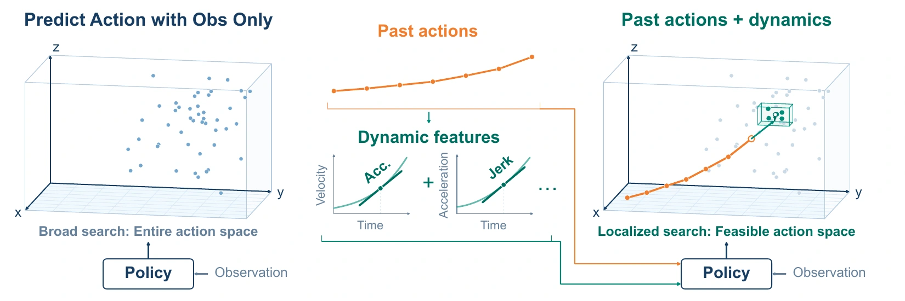
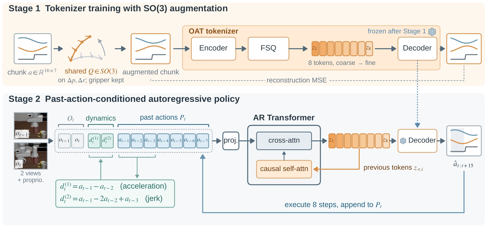

Broaden motion coverage
Train an OAT action tokenizer with SO(3) augmentation. One shared 3D rotation transforms the translations and rotation vectors throughout a chunk, preserving the motion’s shape and leaving gripper commands unchanged.
VISUOMOTOR POLICY LEARNING
Past Action Conditioning Policy
with Data-Augmented Tokenization
1 Northeastern University2 University of Macau
* Co-first authors · † Corresponding authors

01 / THE IDEA
What a robot just did helps explain what it should do next.
Discrete action policies face two challenges: representing continuous motion accurately and predicting the right action tokens. A more precise tokenizer alone does not make its tokens easier to predict.
Past2Next addresses both. Recent executed actions and their first- and second-order differences give the policy a local motion context. SO(3) augmentation broadens the tokenizer’s action coverage. Together, these make finer action representations more useful for control.
LIBERO-Long success rate
+29.2 percentage points over OATRoboCasa success rate
+9.5 percentage points over OATPrepare Fruit success rate
18 of 20 real-robot evaluation trials02 / METHOD
Two training stages address action reconstruction and next-token predictability.
Train an OAT action tokenizer with SO(3) augmentation. One shared 3D rotation transforms the translations and rotation vectors throughout a chunk, preserving the motion’s shape and leaving gripper commands unchanged.
Freeze the tokenizer, then train an autoregressive Transformer. Visual observations, seven recent executed actions, and two finite-difference features provide context for predicting the next action tokens.

The illustrated policy generates eight tokens for a 16-step action chunk. It executes the first eight actions, then uses the latest seven executed actions as context for the next chunk.
03 / REAL-ROBOT EXPERIMENTS
A Piper-X arm performs four-stage tabletop tasks across different initial arrangements.
Unscrew and remove the nut before lifting the washer. Tight and loose nuts require different numbers of turns, while frames just before and after release can look similar.
successful evaluation trials
OAT: 6/20 · Diffusion Policy: 8/20
Pick the strawberry and banana, then place each onto the plate. Three placements show the policy handling different initial object arrangements.
successful evaluation trials
OAT: 14/20 · Diffusion Policy: 12/20
Open the drawer, transfer the pen inside, then close the drawer. The policy must carry the task forward through successive changes in the scene.
successful evaluation trials
OAT: 12/20 · Diffusion Policy: 10/20
Twenty trials per policy and task. Past2Next improves success across all three tasks, with nearly the same per-chunk inference time as OAT.
| Policy | Nut & washer | Fruit | Drawer | Time |
|---|---|---|---|---|
| Diffusion Policy | 8/20 | 12/20 | 10/20 | 40.7 ms |
| OAT | 6/20 | 14/20 | 12/20 | 27.2 ms |
| Past2Next | 15/20 | 18/20 | 16/20 | 27.4 ms |
Videos show demonstration examples across three placements per task. Trial counts are from the paper’s evaluation. Diffusion Policy uses DDIM with ten denoising steps.
04 / SIMULATION EXPERIMENTS
Evaluated on ten LIBERO-Long tasks and ten RoboCasa tasks against discrete and continuous action policies.
Past2Next reaches 85.5% success, 10.7 percentage points above the strongest reported baseline, A2A.
50 demonstrations per task. Long-horizon household tasks require completing several subtasks in sequence.
Past2Next reaches 66.3% success, 3.7 percentage points above A2A and 9.5 points above OAT.
200 demonstrations per task: 50 human demonstrations and 150 generated with MimicGen. Tasks cover kitchen drawers, doors, faucets and appliances.
Policies observe an in-hand camera and a side-view camera. Each method is trained with action chunk sizes of 16 and 32. Results use a chunk size of 32 for OAT on LIBERO-Long and the better chunk size for the remaining settings.
Each checkpoint is evaluated on 50 episodes per task. Values report the best mean success rate and standard error, as reported in Table 2 of the paper.
05 / WHY THE PAST HELPS
Controlled studies separate the effect of conditioning from the tokenizer’s reconstruction accuracy.
With the same 1,000-code OAT tokenizer, adding raw past actions and finite-difference features improves LIBERO-Long success.
Past-action conditioning lowers average conditional entropy with the same 1,000-code tokenizer.
The effective branching factor, exp(entropy), falls from about 18 to about 5 candidate tokens.
A larger codebook provides finer action resolution but also more possible tokens. At a fixed 32-step chunk size, OAT peaks at 1,000 codes. Past2Next without SO(3) augmentation achieves its best result at 5,000 codes in this ablation.
| Codebook size | OAT | Past2Next |
|---|---|---|
| 240 | 29.2 | 51.2 |
| 512 | 53.5 | 58.0 |
| 1,000 | 56.3 | 68.8 |
| 1,920 | 54.6 | 63.2 |
| 5,000 | 46.9 | 73.4 |
CITATION
If this work is useful for your research, please consider citing it.
@unpublished{liu2026past2next,
title = {Past2Next: Past Action Conditioning Policy
with Data-Augmented Tokenization},
author = {Liu, Haotian and Yu, Shoukang and
Huang, Haojie and Hu, Boce and
Wang, Dian and Platt, Robert},
year = {2026},
note = {Manuscript}
}